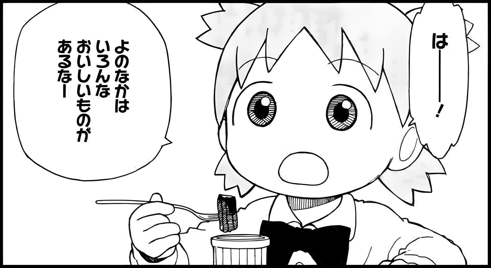

2.Sentence-Ending な
- Japanese also has a number of particles that are used to end sentences - the most common are ね and よ.
- A slightly less common particle is な. It can be used to mark a comment the speaker is making to themselves - e.g.美味しいな (wow, this is delicious).

- In masculine speech, it can be used instead of ね - it has a similar meaning but a much less polite nuance.
- Example: その授業、面白かったな。
@kallisto-no-planetarium